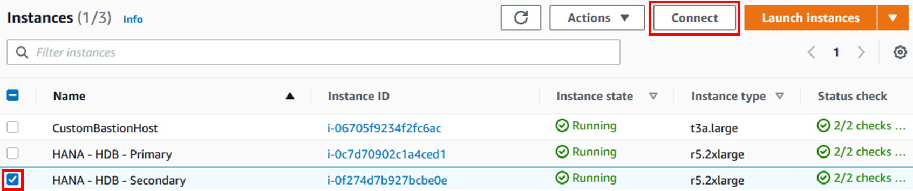
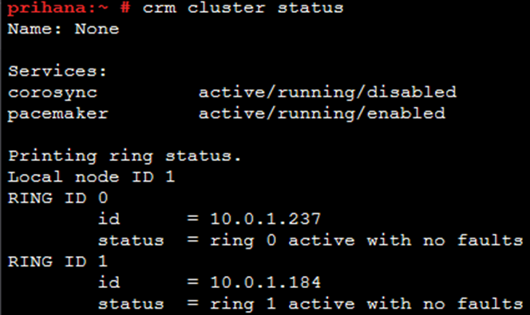
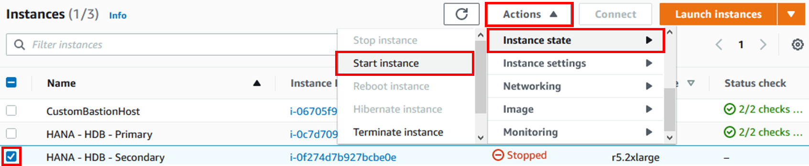
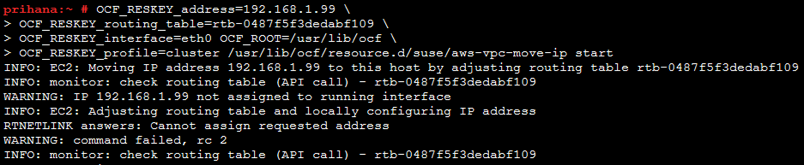
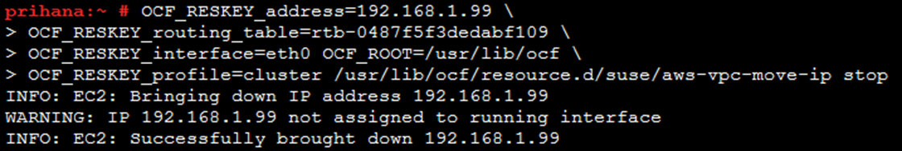

Task 04. Test Resource Agent
Cluster resource agent testing is an important part of cluster management to ensure correct cluster configuration, troubleshoot, and investigate. Resource agents should not be tested with a running cluster or application as they can cause service outages on the node. Make sure the cluster is stopped on both nodes before starting this test.
STOP HA Cluster
After stopping secondary node(sechana), stop primary node(prihana)
-
Connect to EC2 Instance Console
-
Select HANA-HDB-Secondary instance and click Connect. 
-
Select Session Manager and click Connect. Connect to sechana instance through Session Manager.

-
verify the status of sechana cluster (using root user)
sudo su - crm cluster status
-
stop sechana Cluster (using root user)
sudo su - crm cluster stop
-
verify the status of sechana cluster (using root user)
sudo su - crm cluster status -
Connect to EC2 Instance Console
-
Select HANA-HDB-Primary instance, click Action, and click Connect.

-
Select Session Manager and click Connect. Connect to prihana instance through Session Manager.
-
verify the status of prihana cluster (using root user)
sudo su - crm cluster status
-
stop prihana Cluster (using root user)
sudo su - crm cluster stop
-
verify the status of prihana cluster (using root user)
sudo su - crm cluster status
Test EC2 Stonith agent
The command to test the EC2 Stonith agent is as follows. Change the parameters to suit your situation and run. (When testing EC2 Stonith agent, one of the nodes is stopped to verify that IAM policy, AWS CLI configuration, and connection to EC2 API endpoint are working properly.)
stonith -t external/ec2 profile={AWS-PROFILE} port={CLUSTER-NODE2} tag={AWS-TAG-CONTAINING-HOSTNAME} -T off {CLUSTER-NODE2}
The parameters can be checked with the command below. (using root user)
sudo su -
crm configure show res_AWS_STONITH
- {AWS-PROFILE} : cluster : Use the default and, if necessary, replace it with a different profile name.
- {CLUSTER-NODE} : sechana or prihana : Name or IP address of another cluster node.
- {AWS-TAG-CONTAINING-HOSTNAME} : PaceTag : The tag name of the EC2 instance for both cluster nodes.
-
(prihana) The command below stop sechana. (using root user)
sudo su - stonith -t external/ec2 profile=cluster port=sechana tag=PaceTag -T off sechana
-
Connect to EC2 Instance Console, verify the status of sechana.
-
HANA-HDB-Secondary instance is in stopped state. Start sechana to check if it is in a normal state.

-
Select HANA-HDB-Secondary instance, and click Action button. Press Start in Instance State. Press Yes, Start button. 
-
When HANA-HDB-Secondary boots normally, connect to prihana instance
-
(prihana) You can only check the status of a node with the following command. (using root user)
sudo su - stonith -t external/ec2 profile=cluster port=sechana tag=PaceTag -S
Test Overlay IP Agent (aws-vpc-move-ip)
When testing the overlay IP agent, the overlay IP address of the node on which the test runs is configured locally and the VPC route table is modified accordingly. On both systems, run the following command as root user, one system at a time
OCF_RESKEY_address={VIRTUAL-IPV4-ADDRESS} \
OCF_RESKEY_routing_table={AWS-ROUTE-TABLE} \
OCF_RESKEY_interface=eth0 OCF_RESKEY_profile={AWS-PROFILE} \
OCF_ROOT=/usr/lib/ocf /usr/lib/ocf/resource.d/suse/aws-vpc-move-ip start
The parameters can be checked with the command below. (using root user)
sudo su -
crm configure show res_AWS_IP
- {VIRTUAL-IPV4-ADDRESS} : 192.168.1.99 : VIP of HANA DB Cluster
- {AWS-ROUTE-TABLE} : The AWS route table ID for the overlay IP address to be reached from prihana host. You can get this by navigating to SAP-HANA-HA* VPC, then to Private subnet 1, then to Route table.
- {AWS-PROFILE} : cluster : Use the default and, if necessary, replace it with a different profile name.
-
Start overlay IP agent (using root user)
- {AWS-ROUTE-TABLE} : Need to change to confirmed route table ID
sudo su - OCF_RESKEY_address=192.168.1.99 \ OCF_RESKEY_routing_table=<AWS-ROUTE-TABLE> \ OCF_RESKEY_interface=eth0 OCF_ROOT=/usr/lib/ocf \ OCF_RESKEY_profile=cluster /usr/lib/ocf/resource.d/suse/aws-vpc-move-ip start
-
You can also check the IP configured in Linux with the following command (using root user)
ip address show -
Check the IP on a node that is not being tested. (e.g if you are currently testing overlay IPs on prihana, check with sechana)
-
Stop overlay IP agent (using root user)
- {AWS-ROUTE-TABLE} : Need to change to confirmed route table ID
sudo su - OCF_RESKEY_address=192.168.1.99 \ OCF_RESKEY_routing_table=<AWS-ROUTE-TABLE> \ OCF_RESKEY_interface=eth0 OCF_ROOT=/usr/lib/ocf \ OCF_RESKEY_profile=cluster /usr/lib/ocf/resource.d/suse/aws-vpc-move-ip stop
Start HA Cluster
Now that the test is complete, start HA Cluster. Start Primary node cluster (prihana) and then Secondary node (sechana) cluster
-
Connect to EC2 Instance Console
-
Select HANA-HDB-Primary instance, click Action, and click Connect.
-
Select Session Manager and click Connect. Connect to prihana instance through Session Manager.
-
Start Primary node(prihana) cluster (using root user)
sudo su - crm cluster start -
Verify Primary node(prihana) Cluster (using root user)
sudo su - crm cluster status -
Connect to EC2 Instance Console
-
Select HANA-HDB-Secondary instance and click Connect.
-
Select Session Manager and click Connect. Connect to sechana instance through Session Manager.
-
Start Secondary node(sechana) Cluster (using root user)
sudo su - crm cluster start -
Verify Secondary node(sechana) Cluster
sudo su - crm cluster status
© 2020, Amazon Web Services, Inc. or its affiliates. All rights reserved.